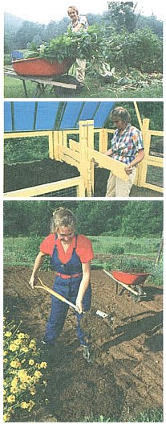

Top to bottom: Fresh green matter ? like this comfrey ? helps add nitrogen and mass to a compost pile. . . . Turning the mound in a compost bin is a simple task if you can open one of the container's sides . . . . Work the finished humus into your soil before planting.